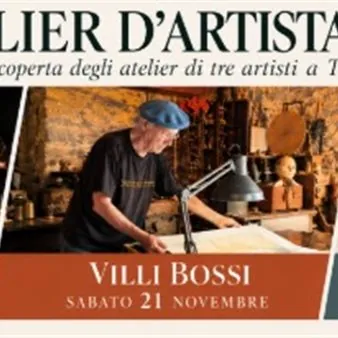

da sab 21 nov a sab 28 nov
Delegazione FAI Trieste - Atelier d' Artista 2026
Il primo appuntamento del percorso alla scoperta degli atelier di artisti triestini, con la visita all’atelier di David Dalla Venezia, è stato un successo! Il viaggio nell’arte contemporanea prosegue con altri due appuntamenti: sabato 21 novembre si entrerà nel mondo delle…
 Indicazioni
Indicazioni
- Costi e prenotazioni
- Costo non indicato · Prenotazione non indicata
- Programma
- Programma da verificare. Apri la fonte ufficiale per orari e possibili aggiornamenti.
- In caso di maltempo
- Nessuna indicazione specifica pubblicata.
- Note
- Acquisito automaticamente dalla fonte.
L’EVENTO
Descrizione completa
Il primo appuntamento del percorso alla scoperta degli atelier di artisti triestini , con la visita all’atelier di David Dalla Venezia, è stato un successo!
Il viaggio nell’arte contemporanea prosegue con altri due appuntamenti: sabato 21 novembre si entrerà nel mondo delle sculture lignee e lapidee di Villi Bossi , mentre sabato 28 novembre si scopriranno i capolavori a grafite di Serse Roma .
Sabato 21 novembre 2026, ore 10 - Visita all'Atelier di Villi Bossi
Villiano “Villi” Bossi (noto anche come Villibossi) è nato a Muggia l'8 novembre 1939. Ha studiato all'Accademia di Belle Arti di Genova e ha frequentato la Scuola Libera di Figura diretta da Nino Perizi presso il Museo Revoltella di Trieste.
Attivo dal 1964, predilige la lavorazione del legno e della pietra e realizza opere astratte, slanciate e monumentali. Ha tenuto decine di mostre personali in Italia e in Austria e partecipato a circa 40 simposi internazionali di scultura in diversi paesi europei.
Nel 1991, insieme alla moglie Gabriella Fiorencis, ha acquistato il trecentesco Castello di Muggia che versava in condizioni di estremo degrado ed abbandono. I due hanno trascorso tredici anni per recuperarlo e trasformarlo in una suggestiva casa-atelier e di recente (dicembre 2025) la proprietà è passata ad una fondazione privata.
In questa occasione esclusiva Villi Bossi caprirà le porte del suo attuale atelier ubicato anch’esso nel cuore di Muggia.
Sabato 28 novembre, ore 11.00 - Visita all'Atelier di Serse Roma
Fabrizio Roma, detto Serse è nato a San Polo di Piave il 14 novembre 1952. Abbandonato il colore, dagli anni 80 pratica con costanza il disegno a grafite su carta, spesso applicato su lastre di alluminio. Dal suo uso della grafite scaturisce una intensissima reinterpretazione del tema del paesaggio: mari, superfici acquatiche, riflessi di piante sull'acqua, cieli nuvolosi, crepacci, alte montagne, boschi innevati: solo luce e ombra, solo carta e grafite. Le sue opere hanno una incredibile resa fotografica e non lasciano alcuno spazio alla figura umana. A predominare sono le forme della natura, la sua grandezza ed il concetto di sublime.
Artista di fama internazionale rappresentato dalla prestigiosa Galleria Continua, Serse ha all’attivo numerose mostre personali ed è l’autore del suggestivo manifesto della 58esima edizione della Barcolana che si è appena conclusa.
Informazioni
Delegazione FAI Trieste
trieste@delegazionefai.fondoambiente.it
IL PROGRAMMA
Programma e orari
Appuntamenti raccolti dalle fonti elencate. Dove manca un orario, non è ancora disponibile in questa scheda.
Programma pubblicato
- Dal 2026-11-21 al 2026-11-28
INFORMAZIONI UTILI
Prima di partire
- Controllare la fonte prima di partire.
ORGANIZZAZIONE